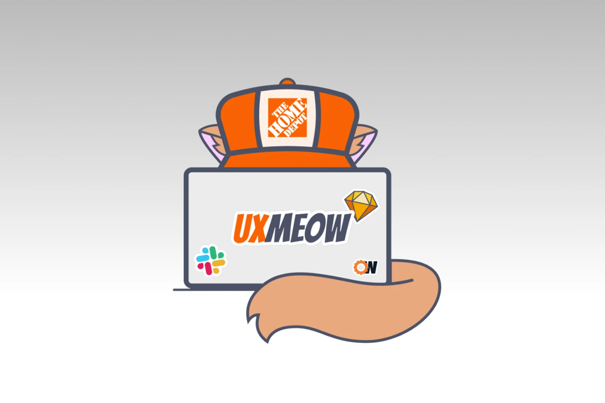

The Home Depot / UX MEOW
Give designers a place
to practice leadership.
Interns needed real projects. Innovation ideas needed attention. Designers wanted opportunities to learn mentoring.
I co-founded UX MEOW and developed mentor training that connected those needs through guided team projects, feedback, and field tests.

- My contribution
- Staff UX Designer; program co-founder, mentor training, workshops, and project sourcing
- Partners
- Fellow Staff Designer, OrangeWorks engineering, innovation champions, and mentors
- Timeframe
- 2019–2022; adapted for remote work in 2020
Protect learning
when delivery creates pressure.
A fellow Staff Designer approached me about creating mentor training. We connected OrangeWorks interns with innovation projects and designer mentors. I sourced projects, developed mentor materials, and led training workshops alongside engineering partners and innovation champions.
We made learning the priority. A missed concept mattered more than a deadline or polished presentation. We built a guided collaboration board around the GV design sprint process, with activity instructions and supporting resources. The first cohort brought 12 interns and 12 designer mentors together in six teams.
Real work gave participants something to practice. Protecting understanding gave mentors a basis for deciding when to slow down.

Ask where the work is stuck.
Do not wait to be asked.
A generic invitation to ask for help left learners responsible for recognizing and raising the problem. We taught mentors to prompt each person about their current work, uncertainty, and understanding.
My co-founder and I modeled the practice by joining check-ins, listening, and asking questions. An unpacking day brought research, constraints, interview transcripts, and experts together before teams proposed solutions.
Training examples
- Where did you get stuck?
- How do you feel about the last module?
- What are you working through now?
Reconstructed mentor-training prompts
Teams explored problem statements, sketches, and low-fidelity prototypes, then presented decisions to champions and stakeholders at the midpoint. They revised, coded, and field-tested the explorations with customers and employees.
Returning mentors
helped the program grow.
I helped run MEOW from 2019 through my departure in 2022. We adapted it for remote work in 2020. Returning mentors trained others, updated materials, and helped scale operations.
The program expanded across engineering, UX, and product management, then opened to employees interested in technical roles. Its structure gave people a supported way to build experience while contributing to a project.
What changed
From six teams
to sixteen.
UX MEOW grew from six to 16 project teams. Three participants from non-technical backgrounds applied for and accepted full-time UX-team positions. These reported program outcomes reflect the shared work of my co-founder, OrangeWorks partners, mentors, champions, participants, and the hiring teams.
What I took forward
Leadership development needs both a place to practice and habits that make uncertainty discussable. Real projects supplied the context; check-ins and feedback protected the learning.